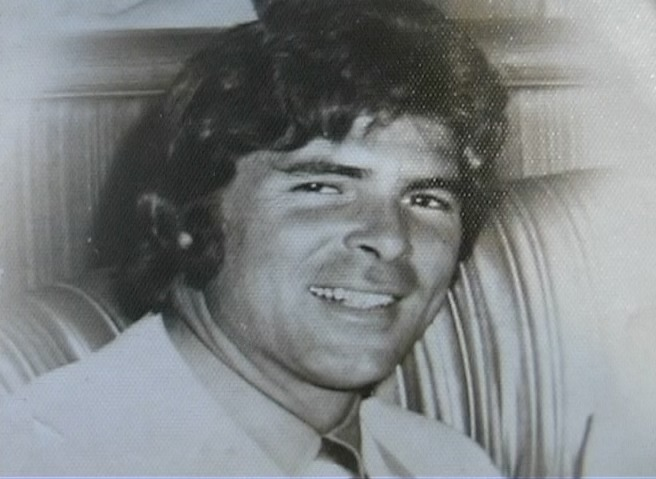

Frank H. Orsatti (stuntman)
Frank Harry Orsatti was born in Los Angeles on February 26, 1942, and died in Sherman Oaks on December 23, 2004. The son of Ernie Orsatti and Inez Gorman, he pursued the family’s baseball tradition before building a career as a stunt performer, coordinator and second-unit director.
His work linked him to several of the era’s leading screen performers: he doubled Arnold Schwarzenegger in The Terminator, Burt Reynolds for nine years, and Bill Bixby in The Magician and as David Banner in The Incredible Hulk. On Hulk he also doubled the Hulk himself and directed episodes.
An original member of Stunts Unlimited, Frank coordinated Serpico, Lock Up and Highlander II, serving as sword master on the latter. His second-unit directing work included Sherlock Holmes Returns, Stark and Strays. The dated cards separately tell his baseball-to-freighters transition, first stunt jobs, Golden Gate Bridge jump and the association’s later tribute.
Credits in the archive (73)
- 1935 The Irish in Us Story
- 1968 Bullitt Stunts
- 1968 Planet of the Apes Stunts
- 1969 The Arrangement Stunts
- 1969 The New People TV Crew · 1 episode
- 1969 Viva Max! Actor: Stunt
- 1970 Daniel Boone TV as Tupi · 1 episode
- 1970 The Immortal TV Crew · 2 episodes
- 1971 B. S. I Love You Actor: Manuel
- 1971 Once Upon a Dead Man Dewhawk
- 1971 Star Spangled Girl Stunts
- 1971 The Jesus Trip Actor: Tyler
- 1972 Fuzz Stunts
- 1972 The Mechanic Stunts
- 1972 The Streets of San Francisco TV Crew · 1 episode
- 1973 Serpico Stunt Coordinator
- 1973 Soylent Green Stunts
- 1973 The Mad Bomber Rapist
- 1973 The Magician TV Stunts
- 1974 Black Samson Nappa's Gang
- 1974 Freebie and the Bean Laundry Truck Driver
- 1974 Lenny Hunter
- 1974 Mannix TV Crew · 1 episode
- 1974 The Longest Yard Stunts
- 1974 The Midnight Man Stunts
- 1975 Cleopatra Jones And The Casino Of Gold Stunt driver
- 1975 Flash and the Firecat Stunts
- 1975 Rancho Deluxe Stuntman
- 1976 The Gumball Rally Stunts
- 1977 Moonshine County Express Stunt Driver
- 1978 Blue Collar Stunt Driver
- 1979 The Incredible Hulk TV Stunt double: David Banner (Bill Bixby) & the Hulk · Stunt Coordinator · Director
- 1980 Farewell to the Planet of the Apes Human
- 1982 First Blood Stunts
- 1982 The Beastmaster Stunts
- 1983 Matt Houston TV Crew · 1 episode
- 1983 The Star Chamber Stunt Men and Women
- 1984 The Terminator Stunts – doubled Arnold Schwarzenegger
- 1984 The Woman In Red Stunts
- 1985 Into the Night Stunts
- 1987 Outlaws TV Director · 3 episodes
- 1988 The Presidio Workman
- 1989 Blind Fury Stunts
- 1989 Kinjite: Forbidden Subjects Stunts
- 1989 Lethal Weapon 2 Stunts
- 1989 Lock Up Stunt coord
- 1989 Road House Stunts
- 1989 Star Trek V: The Final Frontier Stunts
- 1989 The 'Burbs Stunts
- 1989 Who's Harry Crumb? Stunts
- 1990 The Adventures Of Ford Fairlane Stunts
- 1990 Tune In Tomorrow... Stunts
- 1991 Highlander II: The Quickening Stunt Coordinator · Sword Master · Stunts
- 1991 Point Break Stunts
- 1991 Strays Stunts
- 1991 The Last Boy Scout Stunts
- 1991 The Perfect Weapon Stunts
- 1992 Lethal Weapon 3 Stunts
- 1992 Mom And Dad Save The World Stunts
- 1992 No Place to Hide Stunts
- 1992 Rapid Fire Stunts
- 1992 Ruby Action Jackson
- 1993 Cop & 1/2 Stunts
- 1993 Fade to Black Stunt Coordinator
- 1993 Hard Target Stunts
- 1993 Rescue Me Stunts
- 1994 Dragstrip Girl Stunts
- 1994 Maverick Unshaven Man
- 1995 Nine Months Stunts
- 1997 Con Air Stunts
- 1997 Nothing to Lose Stunts
- 1999 D.R.E.A.M. Team Stunts
- 2001 Rain Stunts
On the timeline
From freighters to Planet of the Apes
After ten years working freighters with the Merchant Marines, Frank H. Orsatti returned to Los Angeles and took his first stunt job on Planet of the Apes (1968). Rosemary’s Baby and Bullitt followed the same year.
Stunts Unlimited
Frank H. Orsatti was one of the original members of Stunts Unlimited, the elite stunt association co-founded by Hal Needham, Ronnie Rondell and Glenn Wilder. In 2019 the group named him an honorary member.
Off the Golden Gate Bridge
For B.S. I Love You, Frank H. Orsatti jumped off the Golden Gate Bridge. Stunts Unlimited lists it among the defining gags of a career that went on to The Longest Yard, Lethal Weapon 2 and 3, Point Break and Con Air.
"Frank H. Orsatti created a stunt legacy."
"…he gave so many second unit directors and stunt coordinators their first breaks as stunt performers, myself included." – Manny Perry, Stunts Unlimited, on being hired by Frank to double Lou Ferrigno on The Incredible Hulk.
Sources: Orsatti family · variety.com · stuntsunlimited.com · sabr.org · imdb.com · imdb.com